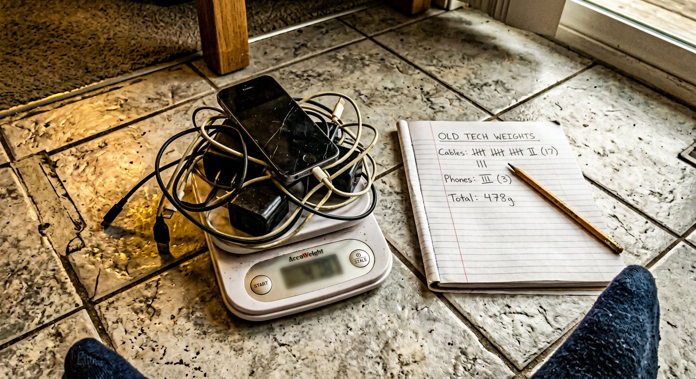

the receipts protocol · mission 02 prep
HOW I
PROVE
THINGS.

WEIGH-DAY ✓ — kitchen scale, zero drama
01
drawer खोलो।
everything out, no mercy.
02
scale पर रखो।
weighed, not guessed.
03
HSPCB list खोलो।
nearest authorised gate मिलाओ.
04
photo + drop.
receipts > शब्द. हमेशा.
weighed. not guessed. ✓
@qwerty_aarav · vikaas